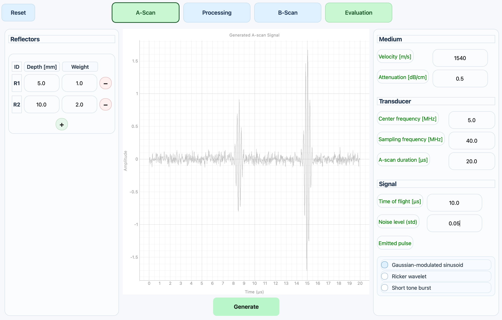
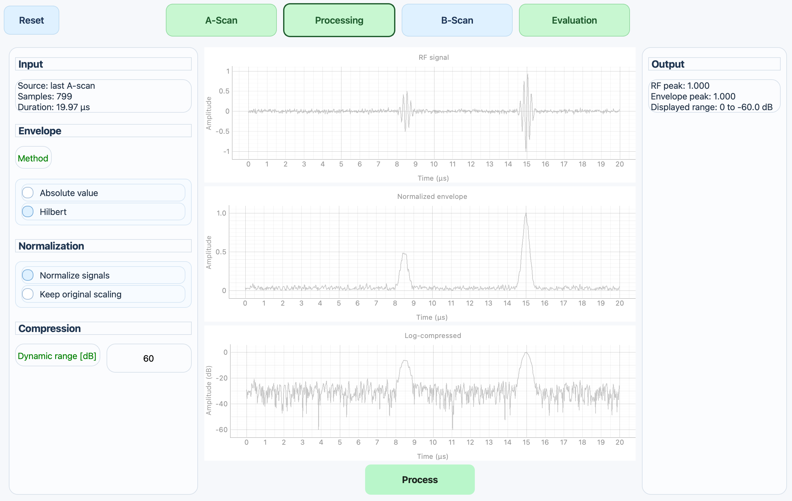
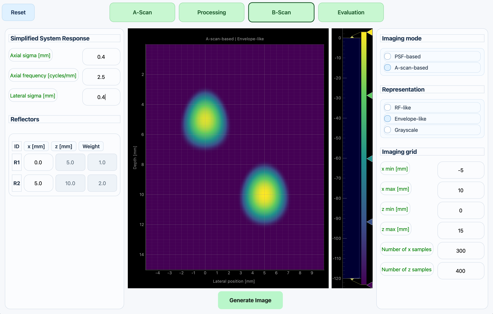

1. Introduction
Ultrasound imaging can be understood as a chain of physical and computational steps: wave emission, interaction with reflectors, echo reception, signal processing and image representation.
This project implements a simplified Python/PyQt application to explore this chain in an intuitive and programmable way. It is not intended to reproduce a clinical ultrasound system, but to provide an engineering-oriented model for understanding how measured signals can progressively become image-like representations.
2. Objective
The objective is to generate, process and visualize ultrasound-like signals from point reflectors and to show how the same reflector configuration can be represented first as an A-scan and then as a simplified B-scan.
- Generate RF A-scan signals using configurable point reflectors.
- Apply envelope extraction, normalization and log compression.
- Build a simplified image-oriented B-scan representation.
3. Physical Model
A homogeneous medium is assumed. Each point reflector is represented by a depth and a relative amplitude. The arrival time of each echo is determined by the two-way travel time:
where z is reflector depth and c is the propagation velocity.
The emitted pulse is approximated by a Gaussian-modulated sinusoidal pulse:
The received RF signal is modeled as the superposition of echoes generated by all reflectors in the medium. Each reflector contributes a delayed and amplitude-scaled version of the emitted pulse.
4. RF Signal Generation
The first stage of the application generates an RF A-scan signal from a small set of point reflectors. In the current example, two reflectors are used because they provide a clear and compact way to observe echo separation, relative amplitude and depth-related arrival times.

5. Signal Processing Stages
After RF A-scan generation, the signal is processed through three visible stages. These stages transform the raw oscillatory signal into a representation more suitable for imaging.
Received radio-frequency signal generated by echoes from the reflectors.
Amplitude profile of the RF signal, scaled according to the selected normalization mode.
Dynamic range compression for image-oriented visualization.

6. B-scan Representation
The A-scan describes echo amplitude as a function of time or depth. By extending this idea across lateral positions, a B-scan representation can be constructed. This provides a first step from signal analysis toward image formation.
In the current implementation, the B-scan is simplified, but it already illustrates how processed echo information can be arranged into an imaging-oriented representation.

7. Observations
- Reflector depth determines the echo arrival time in the RF A-scan.
- Two reflectors are sufficient to investigate echo separation and axial resolution concepts.
- The normalized envelope provides a more interpretable representation of echo amplitudes than the raw RF signal.
- Log compression improves visualization by reducing the dynamic range of the processed signal.
- The B-scan representation illustrates the transition from processed signals toward image formation.
8. Future Work
- Add quantitative metrics such as SNR, axial resolution and contrast evaluation.
- Extend the reflector model toward more complex spatial distributions.
- Connect the workflow with a wave propagation simulation environment.
- Explore how wave propagation, reflection and processing influence image formation.
9. Conclusion
This project provides a simplified but useful framework for understanding the relation between wave interaction, measured echoes, signal processing and imaging-oriented representations.
Although the model is intentionally simplified, it establishes a foundation for further work in ultrasound signal processing, B-scan formation and wave-based imaging concepts.